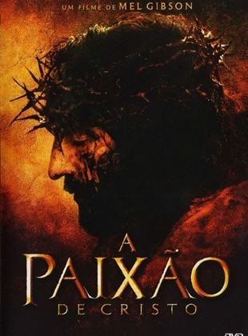

A Paixão de Cristo

Nesta versão da crucificação de Cristo baseada no Novo Testamento, Judas agiliza a queda de Jesus entregando-o a oficiais do Império Romano escolhidos a dedo. Para horror de sua mãe Maria, de Madalena e de seus discípulos, Jesus é condenado à morte.
Voltar